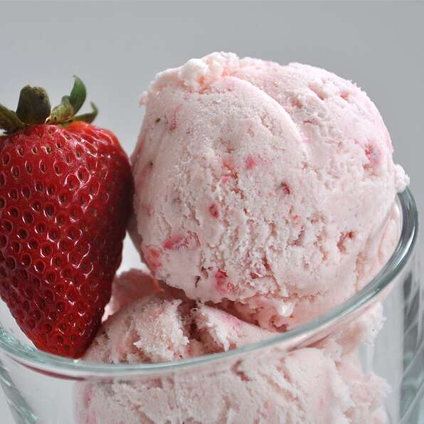

Strawberry Ice Cream

Description
Chocolate cake with a molten chocolate center, topped with vanilla ice cream in a chocolate shell.
Ingredients
- 1/2 cup butter, cut into 8 pieces
- 6 1/2 (1 oz) squares semisweet chocolate, finely chopped
- 3 eggs, room temperature
- 1/3 cup white sugar
- 4 teaspoons unsweetened cocoa powder
- 2 tablespoons all-purpose flour
- 1 pinch salt
Steps
- Preheat the oven to 400 degrees F (200 degrees C). Grease and flour four 6-ounce ramekins.
- Place chocolate and butter in the top of a double boiler over simmering water. Stir frequently, scraping down the sides with a rubber spatula to avoid scorching, until chocolate is melted, about 5 minutes.
- Combine eggs and sugar in a large bowl; beat with an electric mixer until pale and thick, about 5 minutes. Mix in melted chocolate, cocoa powder, and flour until combined. Pour batter into the prepared ramekins and place on a baking tray.
- Bake in the preheated oven until the sides are set but the middle is still jiggly, 10 to 13 minutes. Let cool for 5 minutes before serving.
Nutrition Facts
Per Serving: 562 calories; protein 11g; carbohydrates 34.5g; fat 50.4g; cholesterol 183.8mg; sodium 259.8mg.